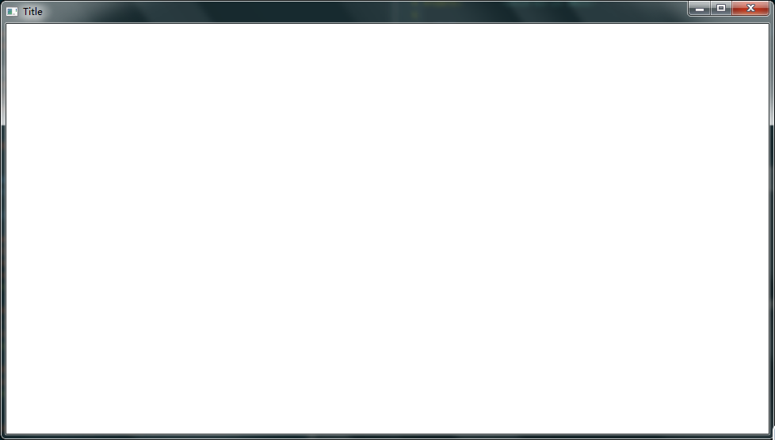

Win32 API 窗口程序
目录
1 前言
之前因为一些原因放弃了学习 Win32 API 来编写图形程序， 虽然还是不打算深入学习
Win32 API, 但还是感觉有必要对 Win32 API 进行一定的了解和学习。
2 基本内容
2.1 类型定义
Win32 API 预先定义了一些类型， 编写程序之前了解这些是很有必要的。
- 整数类型：
| Data type | Size | Signed? |
|---|---|---|
| BYTE | 8 bits | Unsigned |
| DWORD | 32 bits | Unsigned |
| INT32 | 32 bits | Signed |
| INT64 | 64 bits | Signed |
| LONG | 32 bits | Signed |
| LONGLONG | 64 bits | Signed |
| UINT32 | 32 bits | Unsigned |
| UINT64 | 64 bits | Unsigned |
| ULONG | 32 bits | Unsigned |
| ULONGLONG | 64 bits | Unsigned |
| WORD | 16 bits | Unsigned |
布尔类型：
Win32 API中， 布尔类型为BOOL, 只有两个值， 分别为FALSE和TRUE.需要注意的是，
Win32 API中的BOOL是整数类型， 不能和C++中的bool互换。指针类型：
Win32 APi中预定义了许多如P-或LP-形式的指针类型。 其中P代表pointer,LP代表long pointer.RECT* rect; // RECT 类型指针 LPRECT rect; // RECT 类型指针 LP- PRECT rect; // RECT 类型指针 P-
精确指针类型：
以下类型的指针的大小是确定的，
32位机上是32位，64位机上是64位。 当程序被编译时， 指针的大小便被固定下来。 也就是说， 在32位机上编译的程序， 指针大小便固定在32位。即使是在64位机上。- DWORD_PTR
- INT_PTR
- LONG_PTR
- ULONG_PTR
- UINT_PTR
2.2 匈牙利命名法
Win32 API 中采用 匈牙利命名法, 每个变量名由一个或多个小写字母开始。 这些字母有助于记忆变量的类型和用途。
DWORD dwNumber; // dw -- DWORD WORD wNumber; // w -- worDWORD
2.3 使用字符串
Windows 系统的使用者遍布全世界， 仅仅使用 ANSI 字符是满足不了需求的。
因此， Win32 API 定义了新的字符类型以支持 Unicode. 其中宽字符 WCHAR 源自 C++ 的 wchar_t.
typedef wchar_t WCHAR;
声明宽字符或宽字符串时， 应该在前面添加 L.
wchar_t a = L'a'; wchar_t *str = L"hello";
除了 WCHAR 的类型：
| Typedef | Definition |
|---|---|
| CHAR | char |
| PSTR or LPSTR | char* |
| PCSTR or LPCSTR | const char* |
| PWSTR or LPWSTR | wchar_t* |
| PCWSTR or LPCWSTR | const wchar_t* |
Win32 API 还提供了两组 API 来缓解 Unicode 和 ANSI 的转化。 并通过宏来统一这两组 API.
#ifdef UNICODE #define SetWindowText SetWindowTextW #else #define SetWindowText SetWindowTextA #endif
这是一个例子， SetWindowTextA 用于 ANSI, SetWindowTextW 用于 Unicode, 通过宏统一为 SetWindowText.
虽然统一了 API, 但是字符的定义还是很麻烦， 因此 Win32 API 还定义了宏 TCHAR 和 TEXT 来统一字符类型：
| Macro | Unicode | ANSI |
|---|---|---|
| TCHAR | wchar_t | char |
| TEXT("x") | L"x" | "x" |
这样一来， 下面的代码是等效的：
SetWindowText(TEXT("My Application")); // Unicode or ANSI SetWindowTextW(L"My Application"); // Unicode. SetWindowTextA("My Application"); // ANSI.
计算字符串的长度是常用的一个功能， Win32 API 通过宏统一了它们：
#ifdef _UNICODE #define _tcslen wcslen #else #define _tcslen strlen #endif
可以发现， 部分宏通过 UNICODE 定义， 部分通过 _UNICODE 定义。 因此在编写 Unicode 程序的时候， 这
两个宏都应该定义。
2.4 应用程序入口: WinMain
C 语言的入口函数是 main, 而 Win32 Api 程序的入口函数应该是 WinMain.
这个函数的定义格式应该是：
int WINAPI wWinMain(HINSTANCE hInstance, HINSTANCE hPrevInstance, PWSTR pCmdLine, int nCmdShow);
参数解释：
- hInstance: 实例句柄， 操作系统通过这个值来标识应用程序
- hPrevInstance:
16系统的遗留， 现在默认置为0 - pCmdLine: 包含作为
Unicode字符串的命令行参数 - nCmdShow: 一个标志，说明主应用程序窗口是最小化，最大化还是正常显示
2.5 关于句柄
句柄 在 Windows 中应该是一个比较重要的概念， 当初在学习的时候把我绕了一圈还晕乎乎的。
现在， 感觉 句柄 这个概念要容易理解的多了。
首先需要清楚的是： Windows 操作系统内核中有一个全局句柄表。而每个进程都有自己的一个句柄表。
Windows 通过 句柄 来标识 内核对象. Win32 API 编程中， 很多函数都需要用到一个对象的 句柄. 我们
通过这个 句柄 来访问这个对象。
简单来说， 句柄 就是一把钥匙， 我们通过这把钥匙来访问内存中的 内核对象. 如果我们失去了这把钥匙， 我们便失去了访问那个 内核对象 的能力。
调用 Win32 API 创建的对象会返回那个对象的 句柄, 拿到钥匙的我们便可以通过其他 Win32 API 来操作那个对象。
3 简单的窗口程序
#include <windows.h> #pragma comment(lib, "gdi32.lib") #pragma comment(lib, "user32.lib") #pragma comment(lib, "Shell32.lib") LRESULT CALLBACK WndProc(HWND, UINT, WPARAM, LPARAM); int WINAPI WinMain(HINSTANCE hInstance, HINSTANCE hPrevInstance, PSTR pCmdLine, int nCmdShow) { // 依次为窗口类名、窗口句柄、消息结构、窗口类 static TCHAR szAppName[] = TEXT("WAS"); HWND hwnd; MSG msg; WNDCLASS wndclass; // 窗口类初始化 wndclass.style = CS_HREDRAW | CS_VREDRAW; wndclass.lpfnWndProc = WndProc; // 绑定消息处理过程 wndclass.cbClsExtra = 0; wndclass.cbWndExtra = 0; wndclass.hInstance = hInstance; wndclass.hIcon = LoadIcon(NULL, IDI_APPLICATION); wndclass.hCursor = LoadCursor(NULL, IDC_ARROW); wndclass.hbrBackground = (HBRUSH)GetStockObject(WHITE_BRUSH); wndclass.lpszMenuName = NULL; wndclass.lpszClassName = szAppName; // 注册窗口 if (!RegisterClass(&wndclass)) { MessageBox(NULL, TEXT("This progrma requires Windows NT !"), szAppName, MB_ICONERROR); return 0; } // 创建窗口并获取窗口句柄 hwnd = CreateWindow(szAppName, // window class name TEXT("Title"), // window caption(标题) WS_OVERLAPPEDWINDOW, // window style CW_USEDEFAULT, // initial x position CW_USEDEFAULT, // initial y position CW_USEDEFAULT, // initial x size CW_USEDEFAULT, // initial y size NULL, // parent window handle NULL, // window menu handle hInstance, // program instance handle NULL); // creation parameters // 显示窗口并更新 ShowWindow(hwnd, nCmdShow); UpdateWindow(hwnd); // 消息处理 while (GetMessage(&msg, NULL, 0, 0)) { TranslateMessage(&msg); DispatchMessage(&msg); } return msg.wParam; } LRESULT CALLBACK WndProc(HWND hwnd, UINT message, WPARAM wParam, LPARAM lParam) { static int cxClient, cyClient; HDC hdc; PAINTSTRUCT ps; switch (message) { case WM_SIZE: cxClient = LOWORD(lParam); cyClient = HIWORD(lParam); return 0; case WM_PAINT: hdc = BeginPaint(hwnd, &ps); EndPaint(hwnd, &ps); return 0; case WM_DESTROY: PostQuitMessage(0); return 0; } return DefWindowProc(hwnd, message, wParam, lParam); }
这是一个简单的窗口程序， 运行后的样子应该类似于：

对于头部的 #pragma comment 是编译这个程序依赖的静态库， 如果使用 VS, 可以省略。
代码理解部分只有对程序基本流程的解释， Win32 API 接口的参数和程序的具体编写并没有
详细的描述。 如果需要了解可以看一看 官方教程.
3.1 代码理解
虽然是一个简单的窗口程序， 但是 Win32 窗口程序的基本框架和这个程序是基本相同的， 基本流程就是：
- 创建初始化窗口类
- 注册窗口类
- 创建窗口并获取窗口句柄
- 显示窗口
- 窗口消息处理
解释：
- 创建初始化窗口类
- 窗口类
WNDCLASS用于定义窗口的样式。 如窗口的ICON, 窗口的背景色等 - 注册窗口类
- 虽然创建初始化了窗口类， 但是操作系统还不知道这个窗口类， 因此需要将这个窗口 类注册到操作系统， 然后创建窗口时就可以根据这个注册了的窗口类创建窗口了。
- 创建窗口并获取窗口句柄
- 创建窗口的
Win32 API是CreateWindow. 这个函数的第一个参数为 窗口类 的名称。 创建的窗口便是基于注册的这个窗口类的。 创建好窗口后，CreateWindow会返回 创建的窗口的 句柄, 后面的操作便根据这个句柄进行。 - 显示窗口
- 创建窗口后并不会立即显示， 而是在调用
ShowWindow后进行显示。 - 窗口消息处理
Windows的消息机制是编写Win32 API程序的重要一环。while (GetMessage(&msg, NULL, 0, 0)) { TranslateMessage(&msg); DispatchMessage(&msg); }
GetMessage从消息队列中获取消息存入msg中。msg的类型是MSG, 用于储存获取的消息。TranslateMessage对消息进行简单的处理， 转化为消息处理过程可辨认的类型。DispatchMessage调用这个程序的消息处理进程过程这个消息。- 消息处理过程
Windows消息处理过程对获取的消息进行处理。过程的定义类似于：
LRESULT CALLBACK WndProc(HWND hwnd, UINT message, WPARAM wParam, LPARAM lParam)
消息处理过程中， 通过
switch...case...的方式选择需要处理的消息， 其他消息通过DefWindowProc进行 默认的处理。